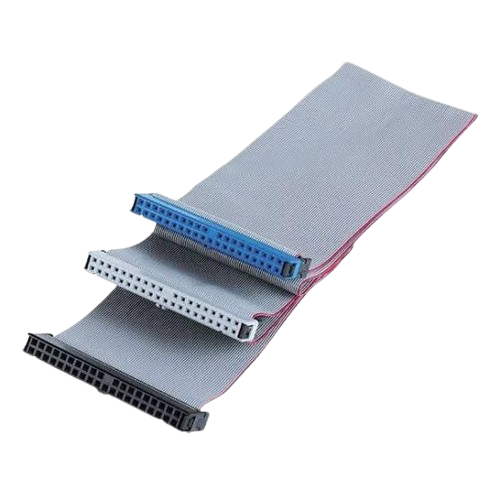

Los buses son las autopistas del ordenador. Son conjuntos de cables microscópicos y pistas eléctricas dibujadas en la placa base por donde viaja toda la información que conecta al procesador con la memoria y el resto de las piezas.
Cada vez que pulsas una tecla o cargas una pantalla de un juego, millones de datos circulan a toda velocidad por estas carreteras digitales para llegar a su destino sin chocar ni perderse. Cuanto más ancho y rápido sea un bus, más información podrá transportar a la vez, evitando atascos dentro del equipo.
Los diferentes tipos de buses que existen son...
DE DIRECCIONES |
DE CONTROL |
DE DIRECCIONES |
|
Los buses de datos son los camiones de transporte que circulan por las autopistas del ordenador. Su única misión es llevar y traer la información real (números, letras, imágenes o sonidos) de un lado a otro, conectando el procesador con la memoria y el resto de los componentes. Estos carriles funcionan en ambos sentidos para que los datos puedan entrar y salir continuamente. Cuantos más carriles tenga un bus de datos (como los famosos sistemas de 64 bits), más paquetes de información podrá transportar en un solo viaje y más rápido trabajará todo el equipo. |
Los buses de control son los semáforos y señales de tráfico del ordenador. Su misión no es transportar datos, sino enviar órdenes y avisos desde el procesador para organizar el trabajo de todas las demás piezas y evitar que choquen entre sí. Por estas líneas viajan señales que indican si toca leer o guardar una información, si un componente está listo para trabajar o si debe esperar su turno. Gracias a ellos, todo el tráfico digital circula en perfecto orden y sin accidentes dentro del equipo. |
Los buses de direcciones son el GPS del ordenador. Su única misión es señalar la ubicación exacta dentro de la memoria donde el procesador quiere guardar un archivo o de dónde necesita recoger un dato. A diferencia de los buses de datos, estas líneas funcionan en un solo sentido, ya que es el procesador quien decide siempre el destino al que hay que ir. Cuantas más líneas tenga este bus, mayor será el mapa de direcciones que puede manejar y más cantidad de memoria podrá aprovechar el equipo. |